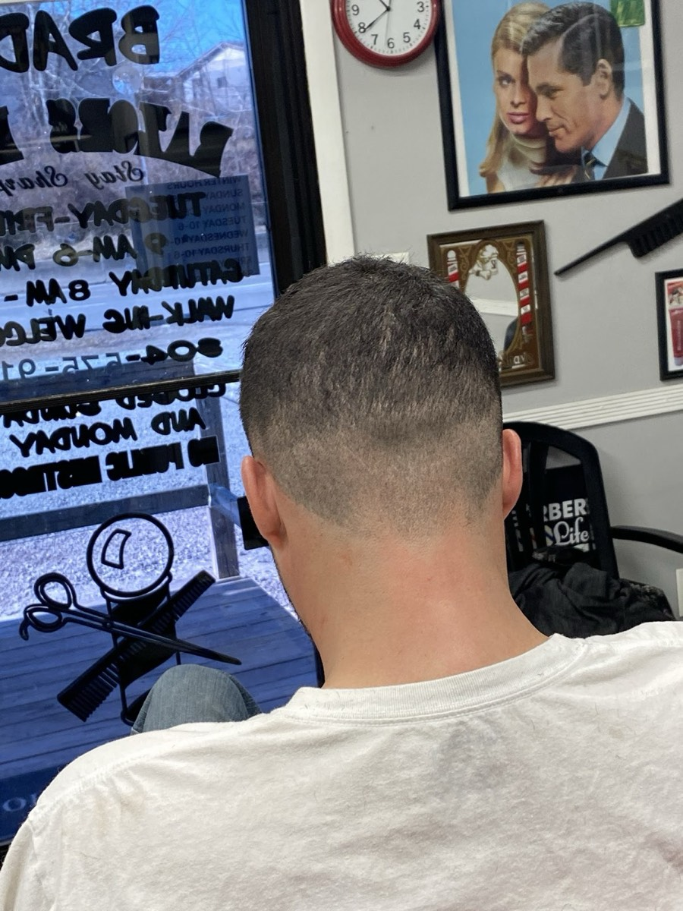

Haircuts & fades
Bring a photo or describe what you're after. Brad checks in as he goes, so the cut ends up the way you pictured it. Customers come back for the fades in particular.
- FadesSkin fades, bald fades with a hard part, low and mid fades
- ClassicFlat tops and short, tidy cuts
- Tricky hairFine hair, cowlicks and hair that "won't lay right"
- FinishA clean straight-razor shave on the neck
